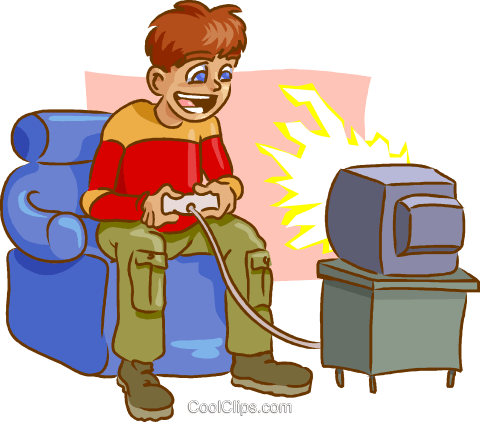
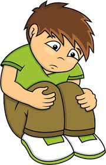
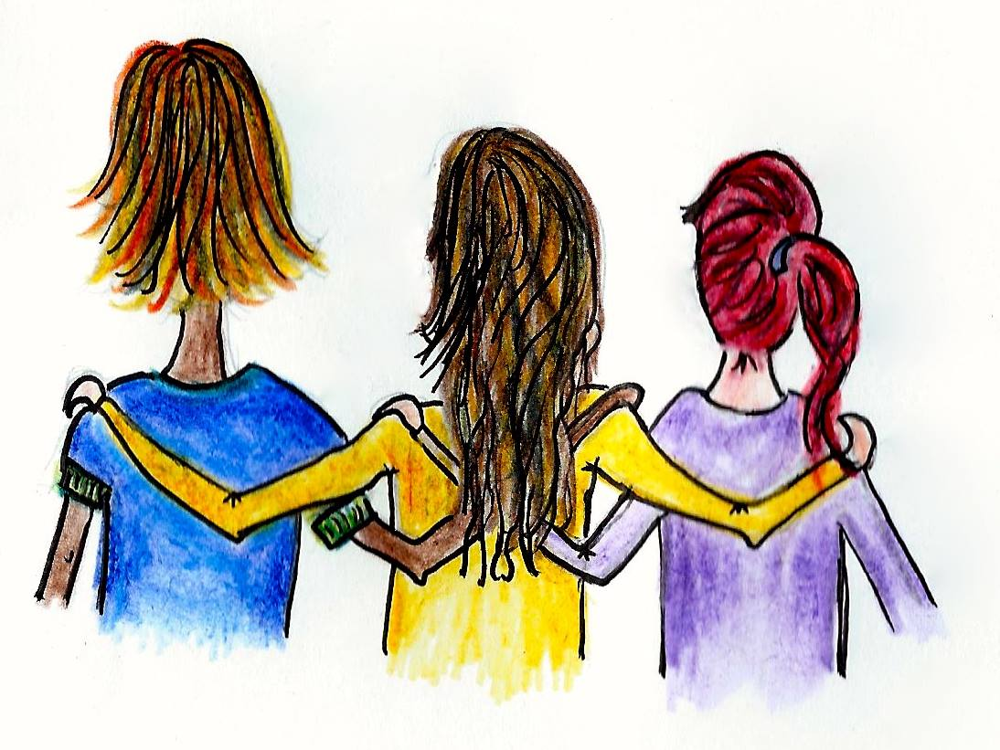

Toys-to-life er er en type videospill hvor spillet lar spillerene bruke ekte leketøysfigurer i selve videospillene. I slike spill vil som regel selve spillet komme med en skanner som lar spillerene skanne inn forskjellige leketøysfigurer gjennom en innebygd elektronikk.
Leketøyfigurene påvirker spillet på forskjellige måter. I noen spill vil leketøyene gi deg nye krefter, eller gjøre kreftene du allerede har sterkere. I noen tilfeller vil du få tilgang til helt nye karakterer du ellers ikke ville hatt tilgang til. Dette kan for mange føre til at man klarer å utføre oppgaver i spillene man ellers ikke ville klart uten. Noen ganger vil enkelte oppgaver være umulige å utføre uten enkelte leketøysfigurer. Dette fører til at man i enkelte tilfeller er nødt til å oppsøke leketøysbutikker eller videospillbutikker hvor leketøyene selges for å kunne utføre alle oppgavene i spillet.
For å spille toys-to-life spill trenger man en type spillkonsoll, en plattform eller portal som skanner spillfigurer og spillfigurene selv. Spillfigurene og skanneren er som regel laget av mikrochipper og plast. Spillkonsoller inneholder mange forskjellige avanserte elektroniske komponenter. Skanneren inneholder en NFC-leser og spillfigurene inneholder en NFC-tag.
Mange barn og ungdommer liker å spille dataspill og videospill. For eksempel på PC, Playstation, mobil eller nettbrett.
Mange blir glad av å spille og syns det er veldig spennende. Noen syns også det er gøy å spille sammen med venner eller få nye venner i spillet. Dette er bra.
Det som ikke er bra er å spille så mye at man slutter å gjøre andre ting som er viktig. For eksempel hvis man ikke går på skolen, ikke er sammen med familie og venner, og slutter å gjøre ting som man likte å gjøre før.
Figurene kan gjøre at man gjør det bedre i spillet. Dette kan gjøre at man får lyst på veldig mange figurer. Det kommer nye figurer hele tiden. Hvis man har mange figurer blir det kanskje vanskelig å slutte å tenke på spillet. Det er derfor lurt å tenke etter om man egentlig trenger flere figurer.
Hvis spillingen tar for stor plass i livet kan det gjøre at man blir mer trist, irritert og sliten. Derfor er det viktig å si fra til en voksen hvis man kjenner på dette. Da kan man få hjelp til å finne ut om det er spillingen eller andre ting som gjør at man er mer lei seg enn før. Mange barn og ungdommer er glade i å spille og liker å bruke tid på det. Det kan gå helt fint å spille mye, men det er lurt å kjenne etter hvordan spillingen gjør at man føler seg.
Er du lei av noen av figurene dine? Har du sluttet å spille toys-to-life, og har mange ubrukte figurer på rommet? Vil du bare bli kvitt noen figurer? Kjenner du noen som vil bli kvitt sine figurer? Heldigvis er det ikke vanskelig!
Figurene kan leveres inn der du kjøpte dem, eller andre butikker som selger slike figurer (for eksempel elektronikk forhandlere, dagligvarer, lekebutikker). Hver kommune er også pålagt å ta imot figurene. Det er bare å søke opp hvordan din kommune gjør det, for å finne ut hvor du kan levere inn. Slik gjør du det i noen av de største kommunene:
Hvis du kjøpte figuren i en nettbutikk, har du også lov å sende figuren tilbake til dem. Alle disse stedene er lovpålagt å til å ta imot figurene.
For å passe på at spillingen ikke får ta for stor plass er det lurt å sette av tid til å gjøre andre ting. Ta pauser fra spillingen og tenk etter hva som kunne vært gøy å gjøre. Det kan være vanskelig i starten dersom man er vant til å spille veldig mye, men kanskje oppdager man at det er andre ting man også syns er gøy å gjøre!